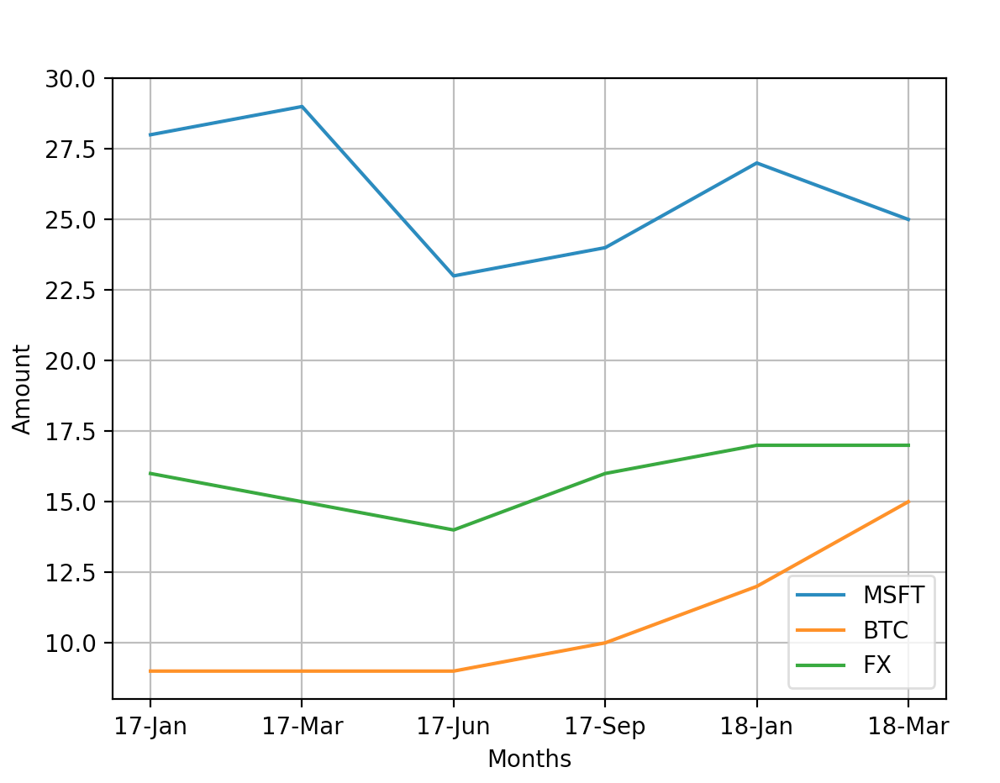
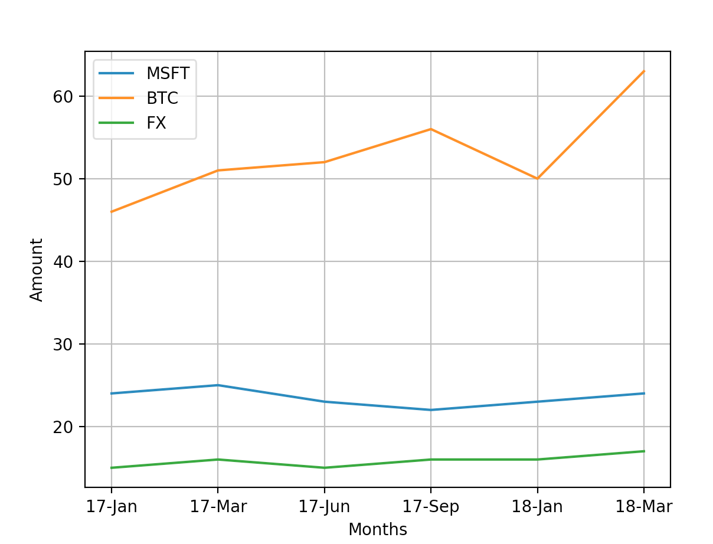

Stock Visualizations with Python
Highest Prices Overtime
For this first visualization, I took the "high" prices data from BTC, MSTF, and FX placed it in the line chart. This data is is shown monthly but it also adjusted to show every couple months starting from the beginning of January 2017 to March 2018.

Lowest Prices
For this second visualization, I took the "low" prices data from BTC, MSTF, and FX placed it in the line chart. This data is is shown monthly but it also adjusted to show every couple months starting from the beginning of January 2017 to March 2018.

Conclusion
From the information I gathered, MSTF is the most descent one. I would recommend this to anybody who asks me about stocks due to the fact that it is never too high or too low.